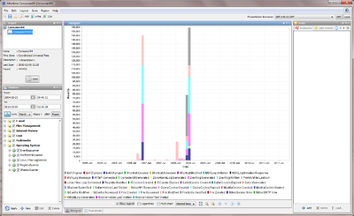
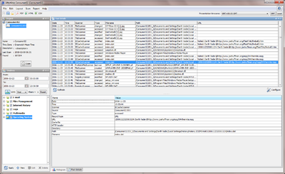
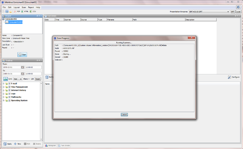

Aftertime
Aftertime
Aftertime is a Java software application that can be used to create time lines for forensic investigators. Aftertime is based on Snorkel to provide access to a large number of image file formats, partition schemes, file systems and file formats. Aftertime not only uses time information contained in the file system but also extracts time information from file contents, e.g. event logs, internet history, e-mail and more. The winners of the DFRWS 2009 Forensic Challenge used Aftertime to create the timeline.
Features
With Aftertime it is possible to set the time zone per project, per image, per scanner or change the time zone displayed. The file types supported are summarized below.
| Mbox | |
| Files | Shortcuts |
| MAC-times | |
| Internet history | Internet Explorer cookies |
| Internet Explorer history | |
| Safari history | |
| Safari cookies | |
| Opera cookies | |
| Mozilla/Firefox cookies | |
| Mozilla/Firefox history | |
| Logs | MSN |
| WTMP | |
| Console kit | |
| Zone alarm | |
| Gator | |
| setupapi.log | |
| WBEM | |
| Multimedia | Exif |
| Operating System | Windows Event log |
| Windows Prefetch | |
| Linux / Macintosh logs | |
| Windows Registry | |
| Windows Shadow-files |
Examples of use
Aftertime is used in a wide variety of cases:
- Was a person using this system at a specific time (alibi)?
- Are there traces of malicious activity at a given time?
- Are there any traces of other activity while this file was downloaded?
- When was this letter written?
Aftertime has two different views on the data. The first display is a graphical view, where events are presented in a histogram. It is possible to display the events in a logarithmic scale to not overlook events that are only present a limited number of times. The second display is a list of events with the details of each event presented by highlighting the event.
Screenshots
  